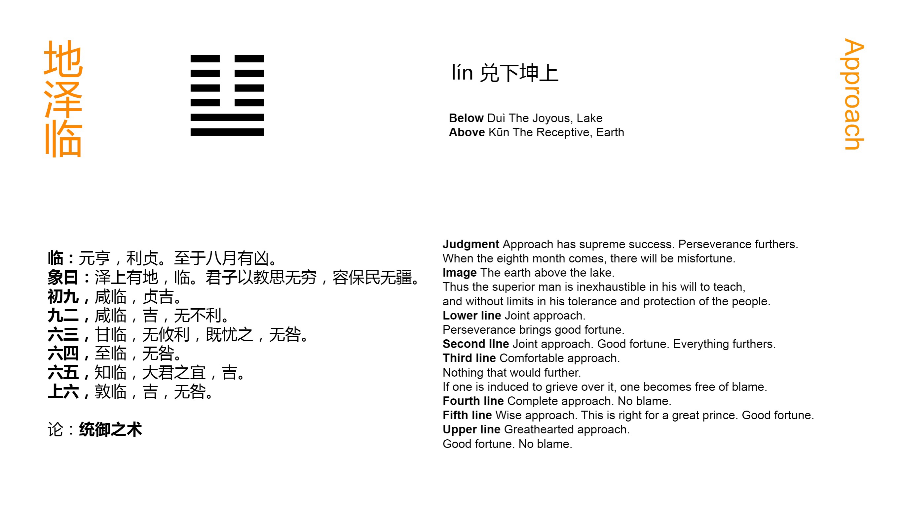

Chinese: 临 ䷒ lín

Lín ䷒ (indicates that under the conditions supposed in it) there will be great progress and success, while it will be advantageous to be firmly correct. In the eighth month there will be evil.
1. The first NINE, undivided, shows its subject advancing in company (with the subject of the second line). Through his firm correctness there will be good fortune.
䷒ changing to ䷆
Matching Line 1 in Adjacent Hexagram: ䷓
2. The second NINE, undivided, shows its subject advancing in company (with the subject of the first line). There will be good fortune; (advancing) will be in every way advantageous.
䷒ changing to ䷗
Matching Line 2 in Adjacent Hexagram: ䷓
3. The third SIX, divided, shows one well pleased (indeed) to advance, (but whose action) will be in no way advantageous. If he become anxious about it (however), there will be no error.
䷒ changing to ䷊
Matching Line 3 in Adjacent Hexagram: ䷓
4. The fourth SIX, divided, shows one advancing in the highest mode. There will be no error.
䷒ changing to ䷵
Matching Line 4 in Adjacent Hexagram: ䷓
5. The fifth SIX, divided, shows the advance of wisdom, such as befits the great ruler. There will be good fortune.
䷒ changing to ䷻
Matching Line 5 in Adjacent Hexagram: ䷓
6. The sixth SIX, divided, shows the advance of honesty and generosity. There will be good fortune, and no error.
䷒ changing to ䷨
Matching Line 6 in Adjacent Hexagram: ䷓
In Appendix VI, Lín ䷒ is explained as meaning 'great.' The writer, having misunderstood the meaning of the previous Gǔ ䷑, subjoins -- 'He who performs such services may become "great."' But Lín ䷒ denotes the approach of authority, -- to inspect, to comfort, or to rule. When we look at the figure, we see two strong undivided lines advancing on the four weak lines above them, and thence follows the assurance that their action will be powerful and successful. That action must be governed by rectitude, however, and by caution grounded on the changing character of all conditions and events.
The meaning of the concluding sentence is given in Appendix I as simply being -- that, 'the advancing power will decay in no long time.' Lû Kăn-khî (Míng dynasty) says: -- 'The sun (or the day) is the symbol of what is Yáng; and the moon is the symbol of what is Yīn. Eight is the number of the second of the four emblematic figures (the smaller Yīn), and seven is the number of the third of them (the smaller Yáng). Hence to indicate the period of the coming of what is Yīn, we use the phrase, "the eighth month"; and to indicate the period of the coming of what is p. 99 Yáng, we use the phrase, "the seventh day".'
The Kāng Xī editors say that this is the best explanation of the language of the Text that can be given: -- 'The Yáng numbers culminate in 9, the influence then receding and producing the 8 of the smaller Yīn. The Yīn numbers culminate in 6, and the next advance produces the 7 of the smaller Yáng; so that 7 and 8 are the numbers indicating the first birth of what is Yīn and what is Yáng.' 'If we go to seek,' they add, 'any other explanation of the phraseology of the Text, and such expressions as "3 days", "3 years", "10 years", &c., we make them unintelligible.' Lín ䷒ is the hexagram of the twelfth month.
Line 1 is a strong line in its proper place. The danger is that its subject may be more strong than prudent, hence the caution in requiring firm correctness.
Line 2, as strong, should be in an odd place; but this is more than counterbalanced by the central position, and its correlate in line 5.
Line 3 is weak, and neither central, nor in its correct position. Hence its action will not be advantageous; but being at the top of the trigram Duì ☱, which means being pleased, its subject is represented as 'well pleased to advance.' Anxious reflection will save him from error.
Line 4, though weak, is in its proper place, and has for its correlate the strong 1. Hence its advance is 'in the highest style.'
Line 5 is the position of the ruler. It is weak, but being central, and having for its correlate the strong and central 2, we have in it a symbol of authority distrustful of itself, and employing fit agents; -- characteristic of the wise ruler.
Line 6 is the last of the trigram Kūn ☷, the height therefore of docility. Line 2 is not its correlate, but it belongs to the Yīn to seek for the Yáng; and it is so emphatically in this case. Hence the characteristic and issue as assigned.